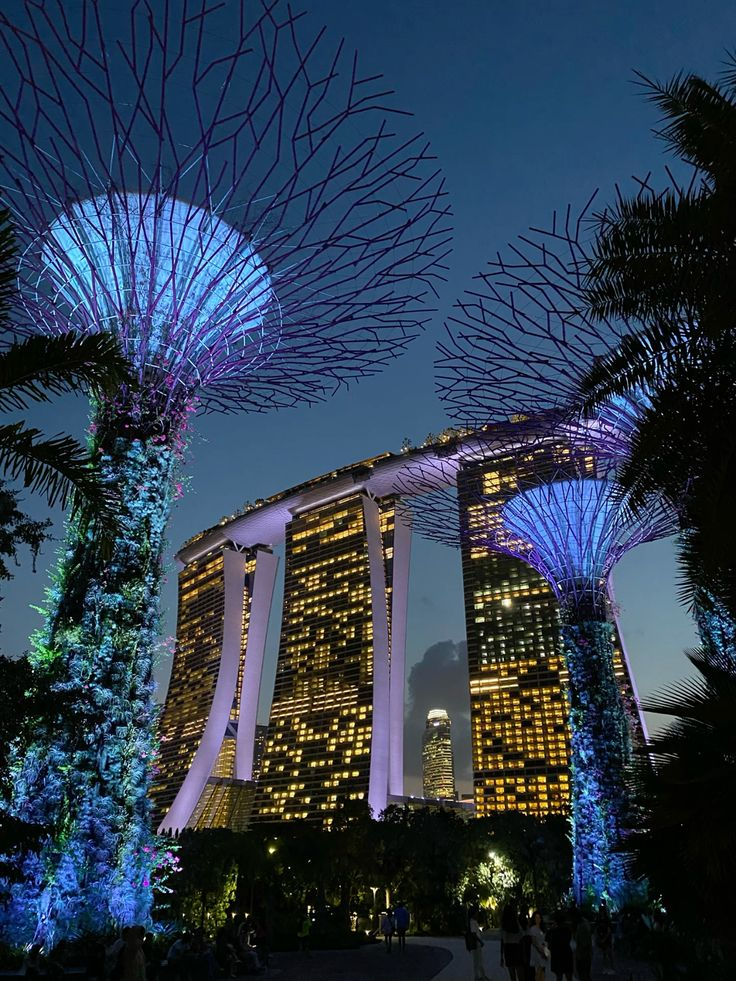
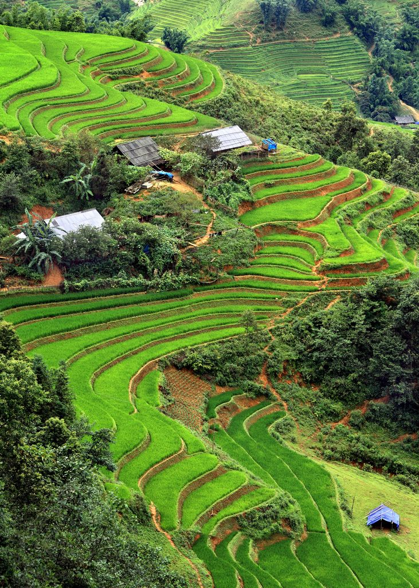
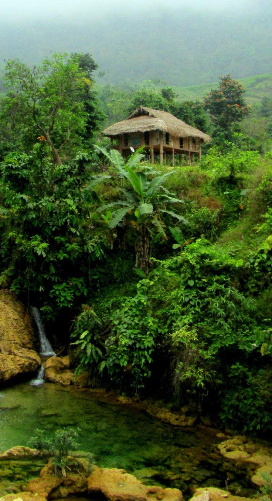

23 MAY — 02 JUN
Bali
Indonesia
02 JUN · overnight flight to Singapore
A TRAVEL NOTEBOOK
Routes, stays and little discoveries, gathered as the journey takes shape.
Back to the collection01 / THE ROUTE · 22 MAY — 22 JUN 2027
Eight stops across Southeast Asia. Dates and onward connections reflect the current working plan.
23 MAY — 02 JUN
Indonesia
02 JUN · overnight flight to Singapore

02 — 04 JUN
Singapore
04 JUN · Southern Islands day trip, then onward to Malaysia
04 — 06 JUN
Malaysia
Two nights · island and accommodation still open

06 — 08 JUN
Malaysia
06–07 JUN · hotel booked · 07–08 JUN connection still open
08 — 11 JUN
Vietnam
11 JUN · onward to Siem Reap · flight not booked
11 — 14 JUN
Cambodia
14 JUN · onward to Luang Prabang · connection provisional
14 — 17 JUN
Laos
17 JUN · onward connection to Thailand open
18 — 21 JUN
Thailand
21 JUN · return flight to London

POSSIBLE STOP
Vietnam · Sapa region

POSSIBLE STOP
Vietnam
ONE NIGHT · DATES TBD
Endau-Rompin · Malaysia
02 / ACCOMMODATIONS · MAY — JUN 2027
Hotel stays matched to the current route dates.
23 MAY — 02 JUN
Bali · Indonesia
10 nights · retreat stay
02 — 04 JUN
Singapore
2 nights
06 — 07 JUN
Kuala Lumpur · Malaysia
1 night · Superior City View King
18 — 21 JUN
Bangkok · Thailand
3 nights